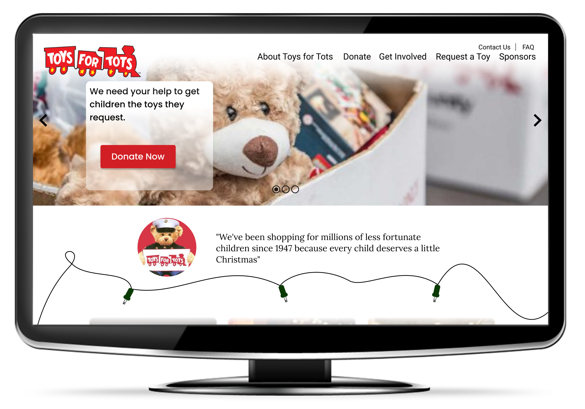
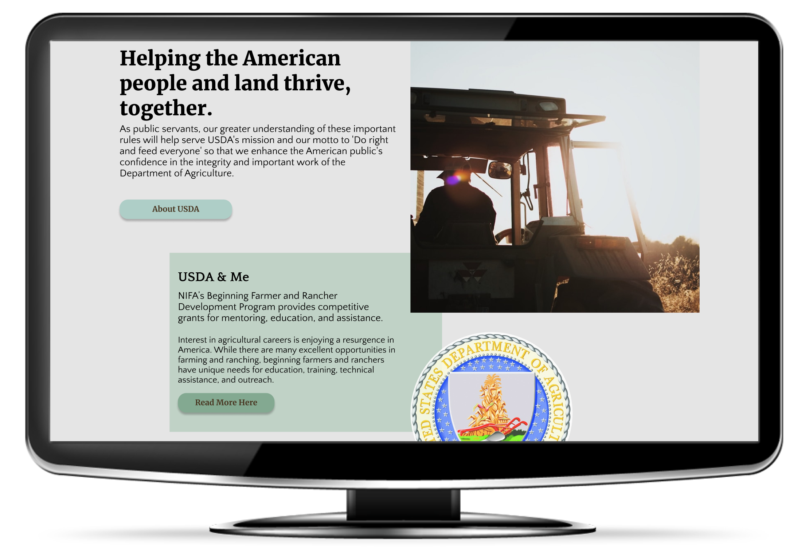

My Work
Toys for Tots
Desktop & Mobile Redesign

US Department of Agriculture
Desktop & Mobile Redesign

Third Project Here
Mystery Machine

At the age of 30, I decided to take my career in a new direction, switching from a six-year career in financial services to one in design.
I am driven to help small businesses polish their online presence. I enjoy learning the origins and values of each company. I then share these unique identifiers through compelling storytelling and visual design.
Tools:
Figma, InVision, Visual Studio Code, Miro, GitHub, Google Suite, Microsoft Office
Specialties:
Customer Centric Design, Story Telling, Thoughtful Design Solutions
User research is the basis for the rest of what I do as a designer. I take pride in learning as much as I can about how users use the products. I also inquire about their motivations and general attitudes relevant to the project. Digital products that bring people back are delightful, thoughtful & useful. User research lays the foundation necessary to understand what we need to deliver.
Empathy has always been a personal superpower of mine. Applying this thoughtful approach to design is second nature for me. I enjoy the challenge of bringing together the possibilities of great design and the requests of stakeholders. Empathy helps me deliver results that meet the expectations of both the end-user and stakeholder.
The better we understand users, their pain points, and their habits the better we can design for them. This will help our designs be more successful. Numbers, KPIs, and traceable changes in useage are all great. As a UX Designer it’s my pleasure to help bring these business needs to life by designing for the very things that make us human.